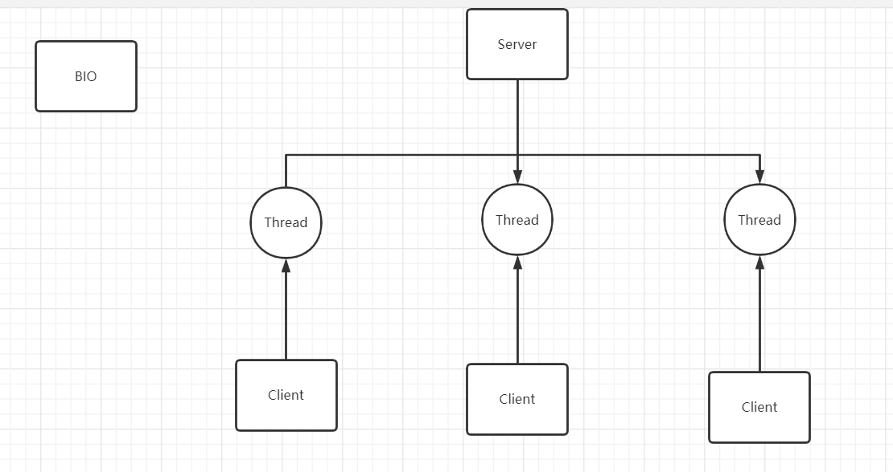
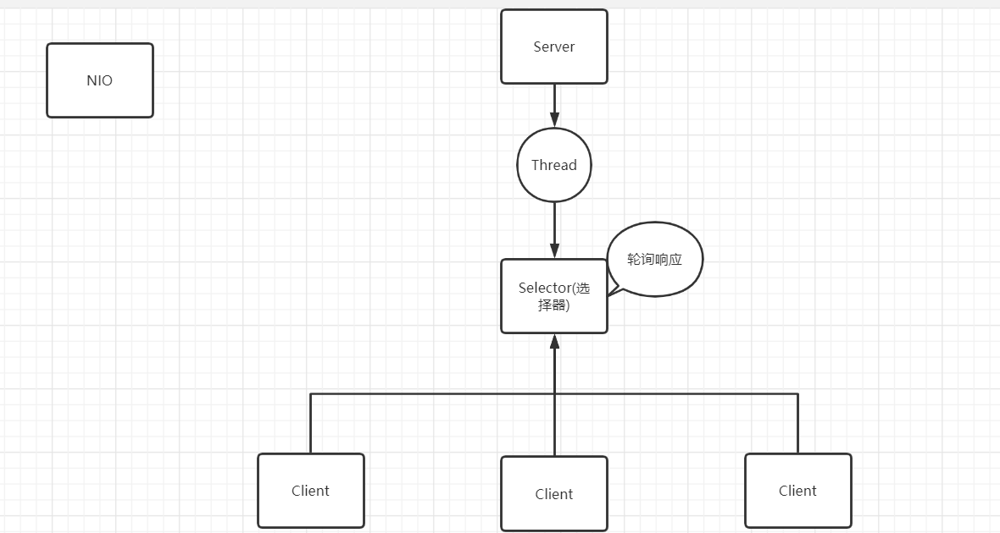
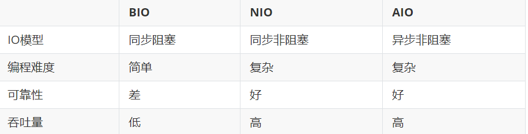

概述
Java中的I/O模型主要有以下三种：BIO、NIO和AIO，接下来就逐个解释含义.
BIO
- 同步且阻塞：服务器实现模式为一个连接一个线程，如果这连接不做任何事情会造成不必要的线程开销.
- 场景：连接数目比较小且固定的架构，对服务器资源要求较高.

NIO
- 同步非阻塞：服务器实现模式为一个线程处理多个请求，通过多路复用器 / Selector轮询到连接有I/O请求上.
- 场景：连接数目多且连接比较短的架构，如聊天服务器，服务器间的通讯等.

AIO
- 异步非阻塞：先由操作系统完成后才通知服务端程序启动线程去处理，适用于连接数比较多且连接时间较长的应用.
- 场景：连接数目多且连接比较长.
- 但是该模型在如今的应用不够广泛，所以这里不加以解释，只对其特点进行简单论述.
比较
